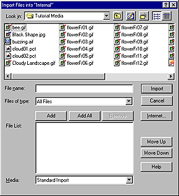
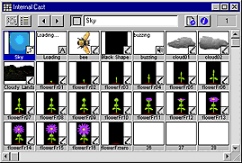
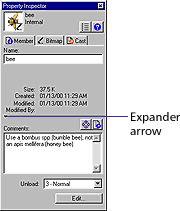

Using Director > Director 8 Tutorial > Import cast members
Using Director > Director 8 Tutorial > Import cast members |
Import cast members
The cast members you've worked with so far are typical of media that you create within Director. To use more complex media, you usually import from other applications.
Director can import many popular types of media, including bitmaps, text, digital video, Flash movies, and sounds. For this movie, you'll import bitmap cast members created in an image editing program, an audio file, and a Flash movie.
1 |
Choose File > Import. |
2 |
Browse to the Learning folder within the Director application folder, and then open the Tutorial Media folder.
 |
3 |
Click Add All.
|
Files in the current folder appear on the list of files to import. |
|
4 |
Verify that Standard Import appears in the bottom pop-up menu, and click Import. |
Director begins importing the files. Depending on the type of computer you have and how many colors your system is set to display, Director may prompt you to confirm the type of media you are importing or to change the color depth (number of colors) in the current image. |
|
5 |
In the Select Format dialog box, select Bitmap Image and Same Format for Remaining Files, and then click OK. |
6 |
In the Image Options dialog box, select Same Settings for Remaining Images. Accept the other default settings, and then click OK. |
7 |
If a Format dialog box prompts you for information about importing the buzzing.aif sound file, specify Sound rather than QuickTime as the format. |
The files that you import appear in alphabetical order by file name as cast members in the Internal Cast window. The Cast window assigns the member a number, based on its position in Cast Thumbnail view.
 |
|
Note: If you change the cast member's position in the Cast window, the number assigned to the cast member also changes. In contrast, Cast List view offers a variety of list sorting options that do not affect the number assigned to the cast member.
Although the cast member names are set to the file names of the imported files, you can change the names of cast members.
Notice that while most of the flower graphics in the tutorial follow the naming convention of flowerFr01, flowerFr02, flowerFr03, and so on, one flower is named flowerFrZero. You will rename flowerFrZero to make its name consistent with that of the other flowers.
1 |
In the Cast window, select flowerFrZero. |
2 |
In the Cast Member Name field at the top of the Cast window, select the text and change the cast member name to flowerFr00. |
Often you'll have comments that you'd like to include with a cast member. Director lets you add cast member comments on the Member tab of the Property Inspector. You can then view the comments in the Cast window (in List view).
For the tutorial, you'll make a note to yourself about the bee.
1 |
If the Cast window is not in List view, click the Cast View Style icon. |
2 |
Click the bee cast member to select it. |
3 |
On the Member tab of the Property Inspector, click the Comments field. (If you do not see the Comments field, click the expander arrow.) Type the following text: Use a bombus spp (bumble bee), not an apis mellifera (honey bee).
 |
4 |
Select the Cast window to see your comment in the Comments field. |
To see the comment, you might have to scroll to the right or enlarge your Cast window. |
|